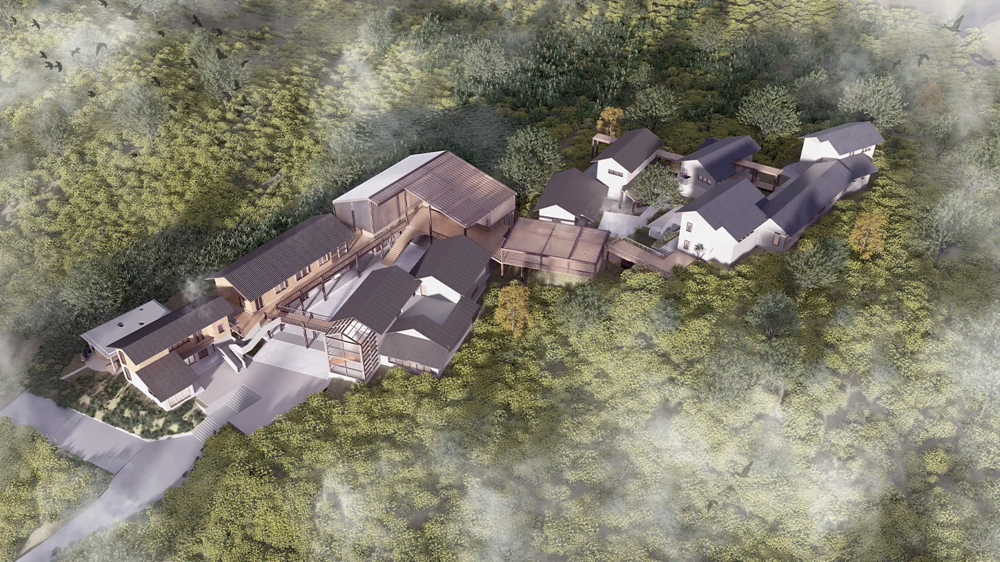
02乡村旧建改造
浮光织隙，旧韵新结
Woven Light, New Knots
基于「研学＋旅游＋农业」三产业融合的乡村更新设计
- 地点
- 重庆市沙坪坝区中梁镇
- 面积
- 3,728 ㎡
- 年份
- 2025.06
- 团队
- 杨官运、王一凡
- 来源
- 大三下课程作业
- 指导
- 孙天明
- 参与
- 前期分析、方案设计、3D 建模、部分工程图、渲染、后期处理
- 获奖
- 第十六届园冶杯大学生国际竞赛 三等奖
不搞大拆大建，而是在原有村落肌理上做「织补」——留下能接回街巷的，拆掉接不回的。
设计背景与问题
场地位于沙坪坝区中梁镇石院村与龙泉村的交界处，以灿若湖为核心。这里兼具乡村的原生性与城市近郊的可达性，但要面对青年人口外流、传统农业附加值低、空间闲置与城市消费需求之间的错配。一个普通的西南村落，怎么变成城市人群愿意周末前来、在地村民也能参与的地方？
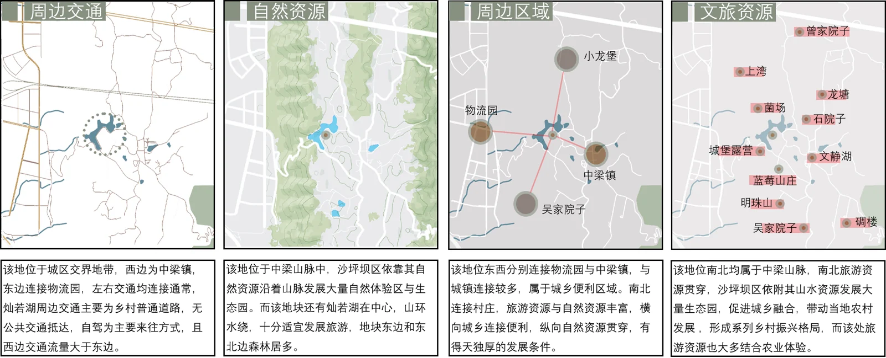
核心策略：三产融合的乡村更新
以「特色农业＋景观旅游＋研学基地」三产融合为路径，围绕灿若湖形成「一心一环四区」——湖是景观核心，环湖步道串起游客集散区、研学实践区、商业发展区与山林体验区。从现状问题出发，经产业基础与资源禀赋分析，确立「生态优先、三产融合、文化赋能」三条原则。
设计逻辑链：人 · 物 · 未来 → 目标定位 → 关键要素 → 设计原则 → 愿景
不搞大拆大建，而是在原有村落肌理上做「织补」——保留有价值的老建筑，拆除结构危险的违建，新建符合现代功能的公共建筑，用廊道和游线把新旧空间串成整体。
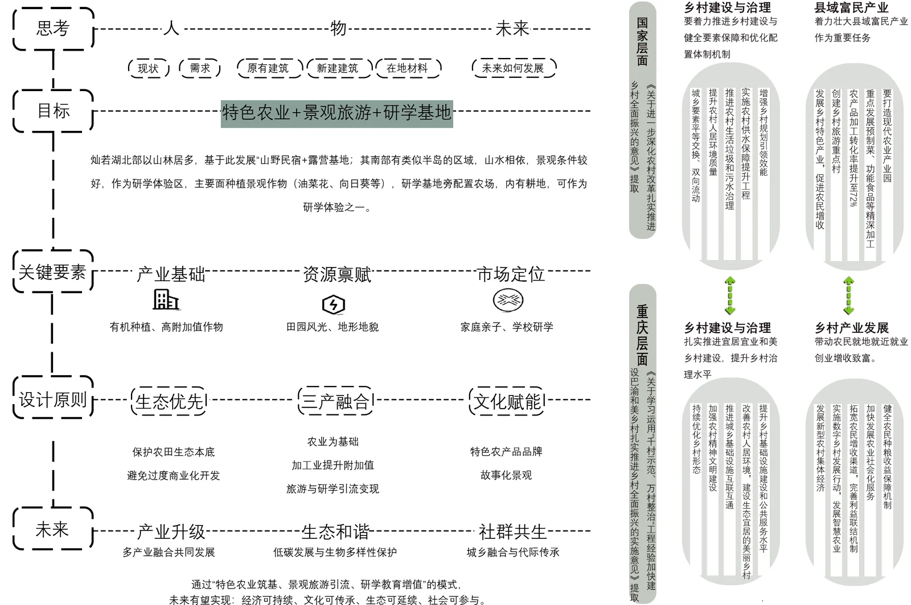
场地与周边分析
场地处在城区与乡村的交界，西靠中梁镇，东邻大学城。嘉陵江滨江路与城市快速路可达；自然资源有中梁山脉与灿若湖水系；文旅资源包括曾家院子、古屋场等传统村落节点。把这些放在一张图上看，能看出村落真正的价值不在单栋房子，而在湖、田、林、路之间的关系。
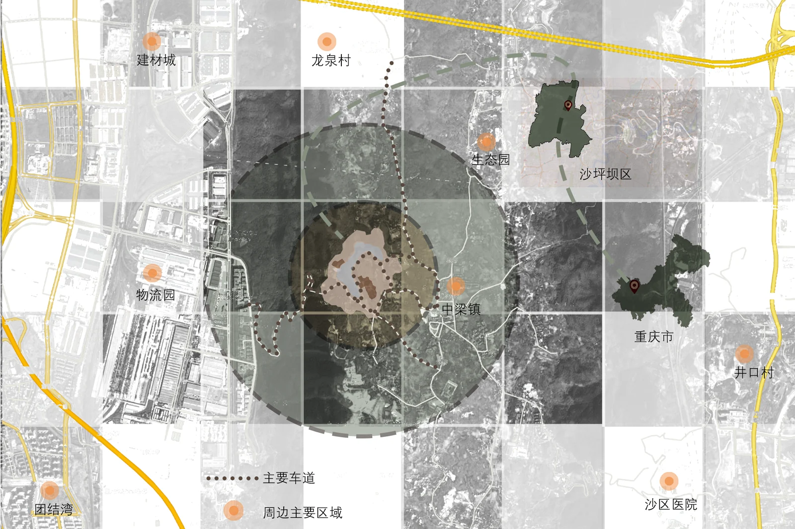
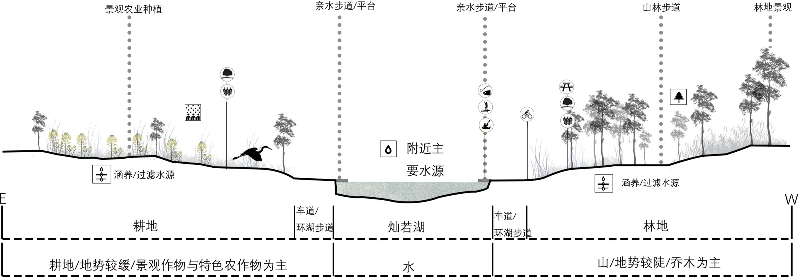
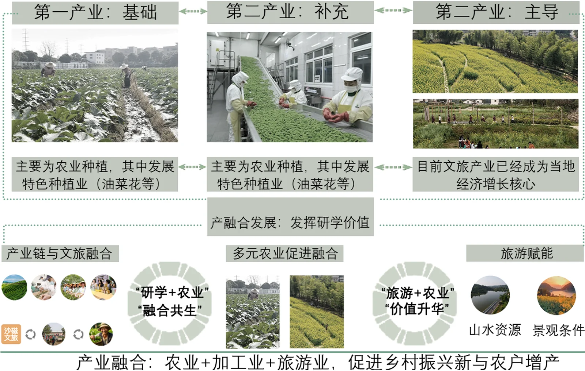
总体规划与产业植入
游客集散中心承担入口服务，环湖步道串联景观农业轮作田、研学基地、农场与果林，花溪渔隐民宿沿湖岸布置。产业上以种植为基础（油菜花、向日葵等景观作物），加工为补充，文旅与研学作引导——一条「农业＋加工＋旅游」的链条，让村民能在自家门口参与租金之外的收入。
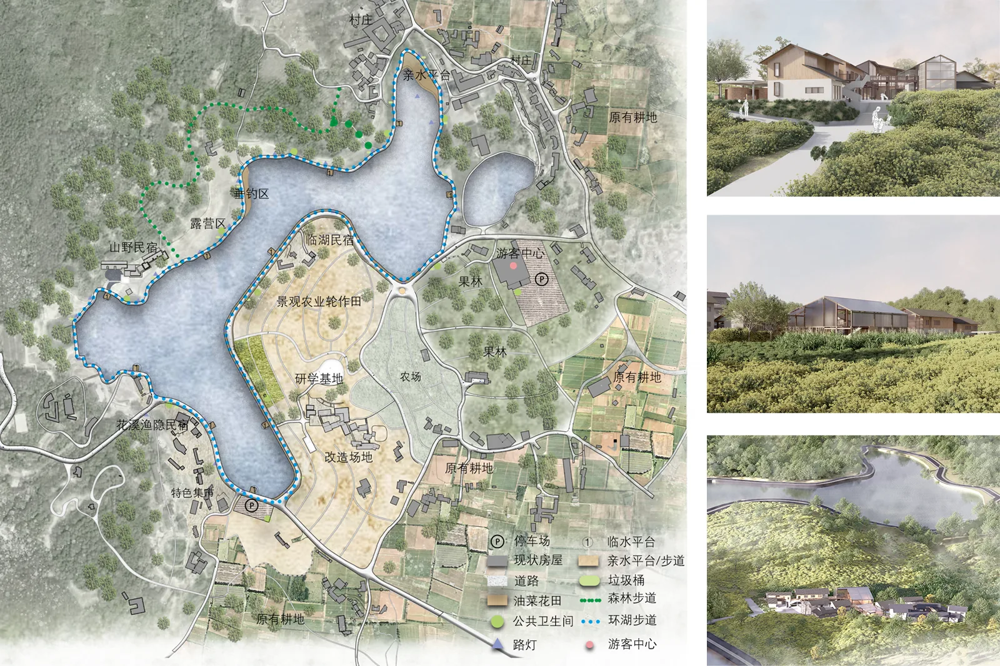
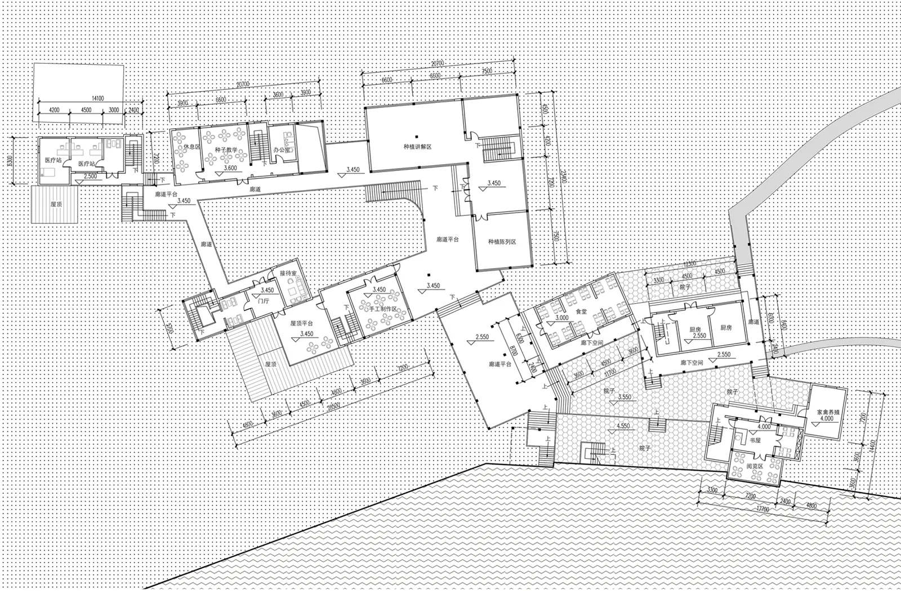
旧建筑更新策略
场地内共 13 栋建筑。拆建依据不是「新旧」，而是建筑肌理：1、6、13 号全部拆除重建，其余 10 栋保留改造，另新建一栋公共建筑——跨度更大、空间更通透，与原有的紧凑肌理形成对比。
手法分三类：「新（补）」补全公共功能缺口；「织（廊）」用廊道串联新旧，形成连续步道；「旧（留）」保留原有风貌、改造内部功能。落到细部是屋顶平坡变化、外廊加建、屋面平台与庭院重构。
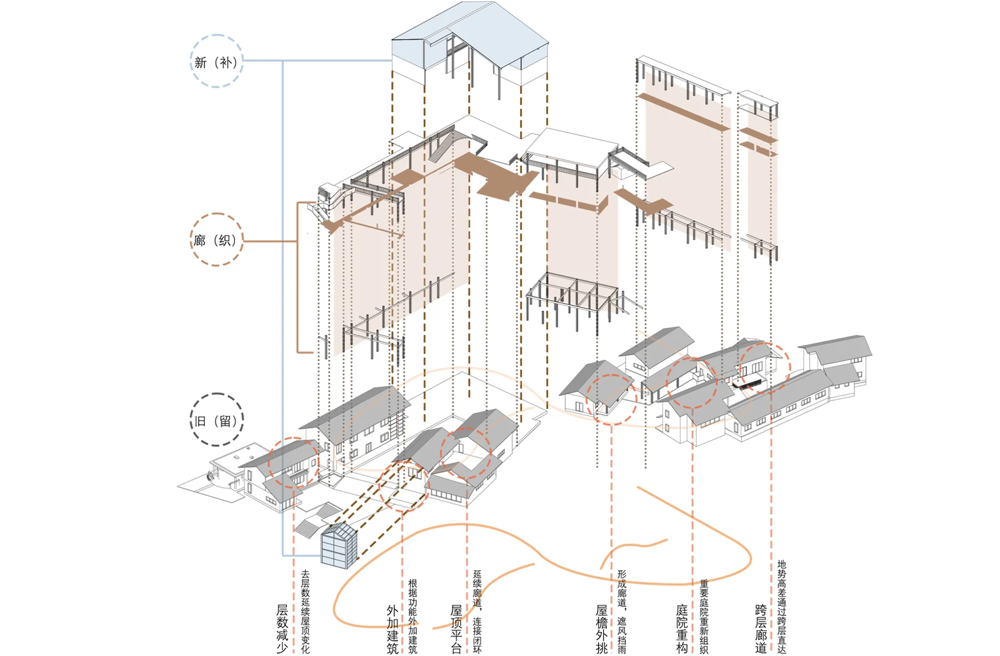
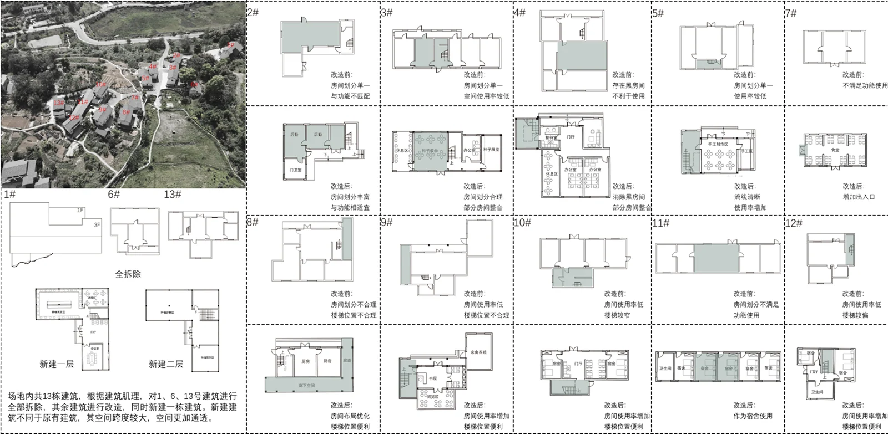
政策对接与愿景
国家乡村振兴战略与重庆乡村建设行动是这一轮更新的上位依据。落到图上其实只有三件事：屋顶的平坡变化、外廊的加建、庭院的重构——尽量少动承重墙，让村子在原有的尺度里继续生长。
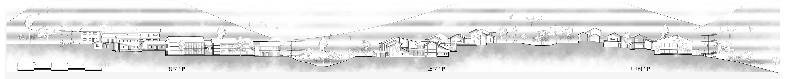